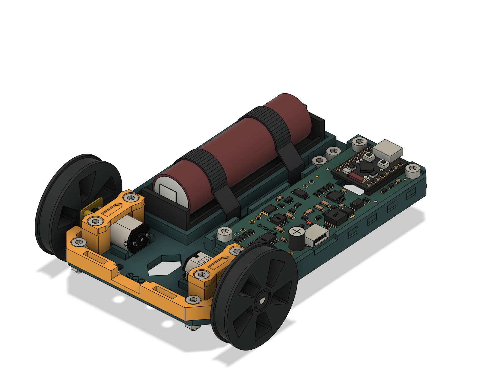
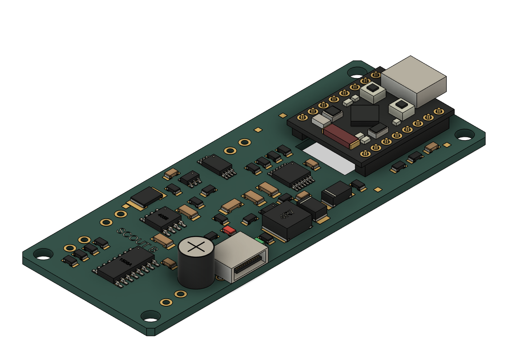

SCOUT / ROBOT PROJECTCURRENT FILE SET · 04 OCT 2026Everything current.
One clean folder.
The complete editable rover, its printable parts, standalone board and chassis models, and the latest Carrier C electrical design.
Electrical: Carrier C. Mechanical: Rev B.
The populated 3D board is the latest completed mechanical model. Its component placement has not yet been synchronized to Carrier C. The filenames preserve that distinction.

Latest complete physical assembly · integral chassis · M3 fasteners
Standalone board export · 48 components · 646 bodies · Rev B01Carrier C · Electrical
02Rev B · Mechanical
03M3 · Print set
04Component references
Original folders remain unchanged. This package omits superseded revisions, working scripts, caches and duplicate archives. Carrier C has 0 reported native board DRC errors and 13 reviewed ERC supply-name warnings. Physical fit, bench tests and assembly sourcing remain to be verified before fabrication.